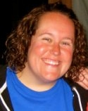

About Us
Jason
Rose
President
Jason Rose is a graduate of Western Illinois University with a degree in Recreation, Parks, and Tourism. He works as a Program Manager at Wyman Center. His job requires him to live on site at Camp Wyman in Eureka, MO. A typical day of work for Jason can send him up on a high ropes course in the morning and a local corporation for teambuilding in the afternoon. He shares his home with a variety of different scaly and furry animals. He has always been passionate about wildlife and he can often be found in the woods hiking and exploring. In his free time away from the clinic and work Jason is often out on a local river in a canoe or up north in Minnesota on extended wilderness trips. He has been a volunteer at WRC since October 2010 and he was very excited to be part of the Board of Directors starting in 2012 and beyond.
Emily
Coffey
Vice President
Emily Coffey was born and raised in St. Louis, Missouri. She began working with animals at a very young age while helping her mother care for cats and dogs which the family fostered. Emily has her B.S. degree from the University of Missouri - St. Louis in Biology with a concentration on Conservation Ecology. She worked at the Missouri Botanical Gardens and Shaw Nature Reserve for several years specializing in restoration efforts of federally listed rare plant species and education. Following her B.S. she received a M.S. in Biodiversity, Conservation and Management from the University of Oxford - United Kingdom. She recently finished her Ph.D., working on long-term vegetation changes on the Galapagos Islands from the same university. She has worked with Gateway Pet Guardians and Stray Rescue caring for and fostering countless cats and dogs. Additionally, she greatly enjoys travel to foreign countries, birding, hiking, canoeing, and anything she can do outside. She has successfully completed the following courses: International Wildlife Rehabilitation Council (IWRC) Basic Wildlife Rehabilitation, IWRC Wound Management, IWRC Pain Management, IWRC Fluid Therapy, National Wildlife Rehabilitators Association (NWRA) Clinical Diagnostic Sampling, and NWRA Suture Techniques. Emily has volunteered at the Wildlife Rehabilitation Clinic since the summer of 2005.

Julie
McDonough
Treasurer
Julie was born in the small, rural town of Clinton, Missouri. Her parents believed in teaching their five children to appreciate nature; to love and nurture it. As a result, there were always plenty of animals around the house, including geese, chickens, pigeons, quail (her father had a breeder's permit to help restore the quail population in central Missouri), a very smart crow, snakes, tarantulas, scorpions, a caiman (which is a small crocodile), tortoises, dogs, cats and many more. Julie married Vince in 1987 and moved to St. Louis. They have two daughters. Since 2001, volunteering at the Wildlife Rehabilitation Clinic has allowed Julie to enjoy the things she loved most about her childhood: Working with animals. Julie has a lifetime certification in elementary education from the University of Missouri, Columbia. She enjoys teaching people of all ages the value of conservation and how to live in harmony with the plants and animals that make up this beautiful planet. Julie loves spending time with her family, playing with her dog, Bella, watching the crazy antics of her two pet mice, and gardening, hiking, traveling, reading and archaeology.

Jillian
Rose
Chairman
Jillian Rose was born and raised in Southern Illinois. She holds bachelor degrees in psychology and journalism from Southern Illinois University Carbondale, and is returning to school for her Masters of Social Work in the fall of 2012. Jillian currently works for Wyman, a non-profit organization whose mission is to enable teens from economically disadvantaged circumstances to lead successful lives and build strong communities. Before joining the Wyman team in 2007, Jillian worked as a Child Welfare Specialist for Lutheran Social Services of Illinois providing case management to children, teens and their families in foster care. Jillian has always been an animal lover and enjoys caring for her "zoo" at home--including dogs, pet rats, fish and various reptiles. She enjoys kayaking with her husband, Jason, and spending time outdoors. Jillian has been volunteering at the Wildlife Rehabilitation Clinic since the fall of 2010.
Beth
Winkler
Secretary
Beth was born and raised in the St Louis area and is currently a teacher, teaching classes involving animal adaptations and survival, pet care and civic responsibility. She enjoys sharing with her students and helping her students create an interest in animal welfare and animal science. Beth has been volunteering at the clinic since 2010 and joined the Board of Directors in 2013. Beth also volunteers her time with the Granite City APA and the Rainbow Ranch Project.
Dee
Martin
Dee was born in Japan, MO about an hour out of St. Louis. She grew up in a single parent family where her mother was an avid animal lover. Dee’s family home was known to take in any wildlife strays. During her early years is the time she fell in love with the personality of raccoons. Dee has been with the Wildlife Clinic since June 2001. During those years she has been a shift volunteer, Lead Shift Supervisor, Raccoon Specialist, Animal Care Coordinator and the Chairman of the Board. You will also see Dee at almost all fundraisers for the clinic. Dee is married with 2 adult children and works full time at Commerce Bank. Dee’s second home is at the Wildlife Clinic.
Sue
Flynn
Sue was born in Saratoga Springs, NY and lived in the state for 45 yrs. After graduating from high school, she went to work at the NYS Identification and Intelligence System for the Bureau of Criminal Investigation for 4 years. In 1973 she married Gary Flynn also from NY. They have 2 children--Philip who lives in Byers, Colorado with his wife Lisa and their two cats. And Jennifer who lives back in Plattsburgh, NY with her husband Ron and their 3 children, Ryan, Joseph and Hailey Jo and many pets. In 1987 she started working for USDA Farmers Home Administration, known now as Rural Development which helps low-income people become first-time home owners. In 1996 the Government did some restructuring of County Offices and she saw the RD was hiring in St. Louis, talked it over with her husband, and moved to Missouri in 1997. She has recently retired and is enjoying her free time. She has been an animal lover forever, has had many pets, cats dogs, horses, etc. Her uncle worked for the NYS Conservation Department and she has fostered 2 baby raccoons, 1 young skunk and a woodchuck. She was also a 4-H leader for 2 yrs. Sue started with the Wildlife Rehab Clinic in 2007 and joined the Board of Directors in 2010.